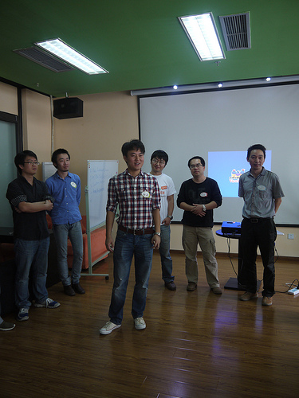
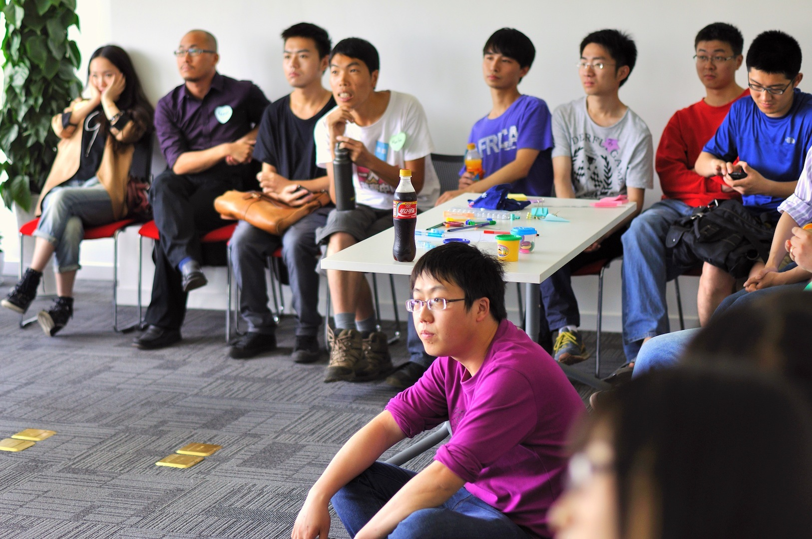

<html>
<head>
    <meta charset="utf-8">
    <meta name="viewport" content="initial-scale=1, maximum-scale=1, user-scalable=no, width=device-width">
    <title>Open Party</title>

    <link href="lib/ionic/css/ionic.min.css" rel="stylesheet">
    <link href="css/app.css" rel="stylesheet">
    <script src="lib/ionic/js/ionic.bundle.min.js"></script>
    <script src="js/app.js"></script>
</head>

<body ng-app="ionicApp" animation="slide-left-right-ios7">

<ion-nav-bar class="nav-title-slide-ios7 bar-light">
    <ion-nav-back-button class="button-icon ion-arrow-left-c">
    </ion-nav-back-button>
</ion-nav-bar>

<ion-nav-view></ion-nav-view>


<script id="intro.html" type="text/ng-template">
    <ion-view>
        <!--<ion-nav-buttons side="left">-->
        <!--<button class="button button-positive button-clear no-animation"-->
        <!--ng-click="startApp()" ng-if="!slideIndex">-->
        <!--Skip Intro-->
        <!--</button>-->
        <!--<button class="button button-positive button-clear no-animation"-->
        <!--ng-click="previous()" ng-if="slideIndex > 0">-->
        <!--Previous Slide-->
        <!--</button>-->
        <!--</ion-nav-buttons>-->
        <!--<ion-nav-buttons side="right">-->
        <!--<button class="button button-positive button-clear no-animation"-->
        <!--ng-click="next()" ng-if="slideIndex != 2">-->
        <!--Next-->
        <!--</button>-->
        <!--<button class="button button-positive button-clear no-animation"-->
        <!--ng-click="startApp()" ng-if="slideIndex == 2">-->
        <!--Start using MyApp-->
        <!--</button>-->
        <!--</ion-nav-buttons>-->
        <ion-slide-box on-slide-changed="slideChanged(index)">
            <ion-slide>
                <div id="boot-1">
                    
                </div>
                <button class="button button-positive button-clear no-animation"
                        ng-click="startApp()" ng-if="!slideIndex">
                    Skip
                </button>
            </ion-slide>
            <ion-slide>
                <div id="boot-2">
                    
                </div>
                <button class="button button-positive button-clear no-animation"
                        ng-click="startApp()" ng-if="!slideIndex">
                    Skip
                </button>
            </ion-slide>
            <ion-slide>
                <button ng-click="startApp()">
                    Let's Party
                </button>
            </ion-slide>
        </ion-slide-box>
    </ion-view>
</script>

<script id="main.html" type="text/ng-template">
    <ion-view hide-back-button="true" title="Awesome">
        <ion-content padding="true">
            <h1>Here is the Open Party Main page</h1>
            <button class="button" ng-click="toIntro()">Do Tutorial Again</button>
        </ion-content>
    </ion-view>
</script>

</body>
</html>
